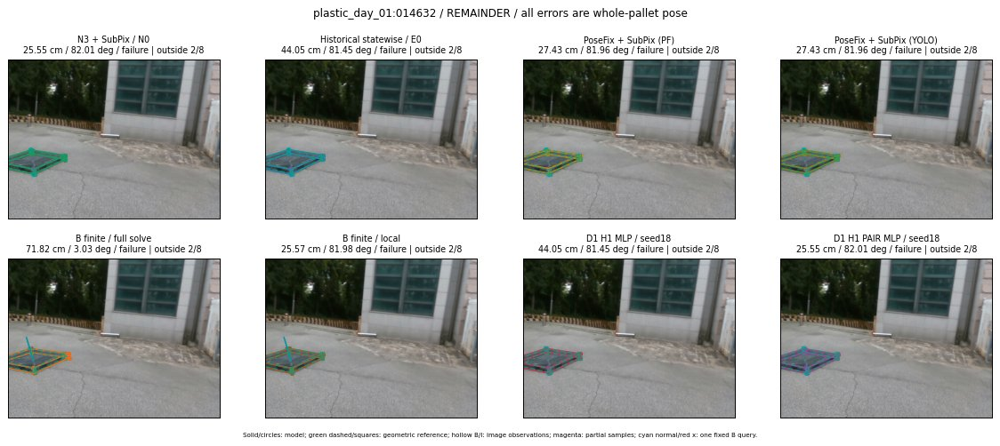

Whole-pallet pose errors; reference is a fixed geometric annotation, not certified physical GT.

Scores are uncalibrated logits. N0 retention is a numerical pose alias; it differs from H0 none or B fallback. B/I and profiles in baseline/B panels are original observations; L panels use new D1 observations. Only one deterministic supported B query is shown in a thumbnail; full support counts are below. Grey privacy rectangles edit the display copy only and are unrelated to O states; all observations were measured on original pixels. Thumbnails use JPEG quality85; detailed scientific panels are PNG.
| Method | Whole pose / cm, deg | Actual source | Selected ID | Score | Archived candidates | Eligible | N0 retained | H0 none | Fallback | Finite profiles |
|---|---|---|---|---|---|---|---|---|---|---|
| Raw YOLO + F | 33.20 cm / 82.09 deg / failure | OTHER | None | N/A | N/A | N/A | False | N/A | None | N/A |
| N3 + SubPix / N0 | 25.55 cm / 82.01 deg / failure | N0 | None | N/A | N/A | N/A | True | N/A | None | N/A |
| Historical statewise / E0 | 44.05 cm / 81.45 deg / failure | E0_REGENERATED | None | N/A | N/A | N/A | False | N/A | False | N/A |
| PoseFix raw | 37.13 cm / 1.76 deg / failure | OTHER | None | N/A | N/A | N/A | False | N/A | None | N/A |
| PoseFix + SubPix (PF) | 27.43 cm / 81.96 deg / failure | OTHER | None | N/A | N/A | N/A | False | N/A | False | historical support records 9; finite audit N/A |
| PoseFix + SubPix (YOLO) | 27.43 cm / 81.96 deg / failure | OTHER | None | N/A | N/A | N/A | False | N/A | False | historical support records 9; finite audit N/A |
| Historical L, seed18 | 25.55 cm / 82.01 deg / failure | N0 | N0 | N/A | 45 | 45 | True | True | True | N/A |
| Historical B fixed bank | 77.35 cm / 3.99 deg / failure | OTHER | G10/SWAPPED_WD/sample/1 | N/A | N/A | N/A | False | N/A | False | N/A |
| Historical B full | 71.86 cm / 3.03 deg / failure | OTHER | NEW/B/SWAPPED_WD/h1/G10/SWAPPED_WD/sample/2/PROPOSED_NATIVE_YAW_1 | N/A | N/A | N/A | False | N/A | False | N/A |
| Historical edge full | 172.64 cm / 4.77 deg / failure | OTHER | NEW/edge/SWAPPED_WD/h0/G10/SWAPPED_WD/sample/0/PROPOSED_NATIVE_YAW_0 | N/A | N/A | N/A | False | N/A | False | N/A |
| Historical AB full | 71.48 cm / 3.01 deg / failure | OTHER | NEW/AB/SWAPPED_WD/h0/G10/SWAPPED_WD/sample/0/PROPOSED_NATIVE_YAW_0 | N/A | N/A | N/A | False | N/A | False | N/A |
| B finite / fixed bank | 77.35 cm / 3.99 deg / failure | OTHER | G10/SWAPPED_WD/sample/1 | N/A | N/A | N/A | False | N/A | False | 16/16 |
| B finite / full solve | 71.82 cm / 3.03 deg / failure | OTHER | NEW_FINITE/B/SWAPPED_WD/h3/G10/ORIGINAL_WD/sample/1/PROPOSED_NATIVE_YAW_3 | N/A | N/A | N/A | False | N/A | False | 16/16 |
| B finite / local | 25.57 cm / 81.98 deg / failure | OTHER | NEW_FINITE/B/ORIGINAL_WD/h0/N0_LOCAL_SAME_PHYSICAL_POSE/ORIGINAL_WD | N/A | N/A | N/A | False | N/A | False | 16/16 |
| Edge finite / full solve | 90.58 cm / 3.05 deg / failure | OTHER | NEW_FINITE/edge/SWAPPED_WD/h3/G10/ORIGINAL_WD/sample/1/PROPOSED_NATIVE_YAW_3 | N/A | N/A | N/A | False | N/A | False | 16/16 |
| D0 H0 MLP / seed18 | 25.55 cm / 82.01 deg / failure | N0 | N0 | -0.6877894401550293 | 8 | 8 | True | True | True | N/A |
| D0 H0 MLP / seed19 | 25.55 cm / 82.01 deg / failure | N0 | N0 | -0.3489065170288086 | 8 | 8 | True | True | True | N/A |
| D0 H0 MLP / seed20 | 25.55 cm / 82.01 deg / failure | N0 | N0 | -2.1799590587615967 | 8 | 8 | True | True | True | N/A |
| D0 H1 MLP / seed18 | 44.05 cm / 81.45 deg / failure | E0_REGENERATED | E0_REGENERATED | -2.3901524543762207 | 8 | 8 | False | False | False | N/A |
| D0 H1 MLP / seed19 | 44.05 cm / 81.45 deg / failure | E0_REGENERATED | E0_REGENERATED | -2.755051374435425 | 8 | 8 | False | False | False | N/A |
| D0 H1 MLP / seed20 | 44.05 cm / 81.45 deg / failure | E0_REGENERATED | E0_REGENERATED | -2.9948570728302 | 8 | 8 | False | False | False | N/A |
| D1 H0 MLP / seed18 | 44.05 cm / 81.45 deg / failure | E0_REGENERATED | E0_REGENERATED | 4.6384382247924805 | 8 | 8 | False | False | False | N/A |
| D1 H0 MLP / seed19 | 44.05 cm / 81.45 deg / failure | E0_REGENERATED | E0_REGENERATED | 3.7208266258239746 | 8 | 8 | False | False | False | N/A |
| D1 H0 MLP / seed20 | 44.05 cm / 81.45 deg / failure | OTHER | G10/ORIGINAL_WD/endpoint/3 | 3.687645673751831 | 8 | 8 | False | False | False | N/A |
| D1 H1 MLP / seed18 | 44.05 cm / 81.45 deg / failure | E0_REGENERATED | E0_REGENERATED | 0.19981186091899872 | 8 | 8 | False | False | False | N/A |
| D1 H1 MLP / seed19 | 44.05 cm / 81.45 deg / failure | OTHER | G10/ORIGINAL_WD/endpoint/3 | -0.26256611943244934 | 8 | 8 | False | False | False | N/A |
| D1 H1 MLP / seed20 | 44.05 cm / 81.45 deg / failure | E0_REGENERATED | E0_REGENERATED | 0.9842890501022339 | 8 | 8 | False | False | False | N/A |
| D1 H1 ROLE AFFINE / seed18 | 25.55 cm / 82.01 deg / failure | N0 | N0 | 0.8839524984359741 | 8 | 8 | True | False | False | N/A |
| D1 H1 ROLE AFFINE / seed19 | 25.55 cm / 82.01 deg / failure | N0 | N0 | 0.19600161910057068 | 8 | 8 | True | False | False | N/A |
| D1 H1 ROLE AFFINE / seed20 | 25.55 cm / 82.01 deg / failure | N0 | N0 | 0.7713226675987244 | 8 | 8 | True | False | False | N/A |
| D1 H1 PAIR MLP / seed18 | 25.55 cm / 82.01 deg / failure | N0 | N0 | 0.22123593091964722 | 8 | 2 | True | False | False | N/A |
| D1 H1 PAIR MLP / seed19 | 25.55 cm / 82.01 deg / failure | N0 | N0 | 0.5718345642089844 | 8 | 2 | True | False | False | N/A |
| D1 H1 PAIR MLP / seed20 | 25.55 cm / 82.01 deg / failure | N0 | N0 | 1.304630160331726 | 8 | 2 | True | False | False | N/A |
| D1 H1 PAIR ROLE AFFINE / seed18 | 25.55 cm / 82.01 deg / failure | N0 | N0 | 0.6551534533500671 | 8 | 2 | True | False | False | N/A |
| D1 H1 PAIR ROLE AFFINE / seed19 | 25.55 cm / 82.01 deg / failure | N0 | N0 | 0.6567805409431458 | 8 | 2 | True | False | False | N/A |
| D1 H1 PAIR ROLE AFFINE / seed20 | 25.55 cm / 82.01 deg / failure | N0 | N0 | 0.5543936491012573 | 8 | 2 | True | False | False | N/A |
| Regenerated common E0 | 44.05 cm / 81.45 deg / failure | E0_REGENERATED | E0_REGENERATED | N/A | N/A | N/A | False | N/A | False | N/A |